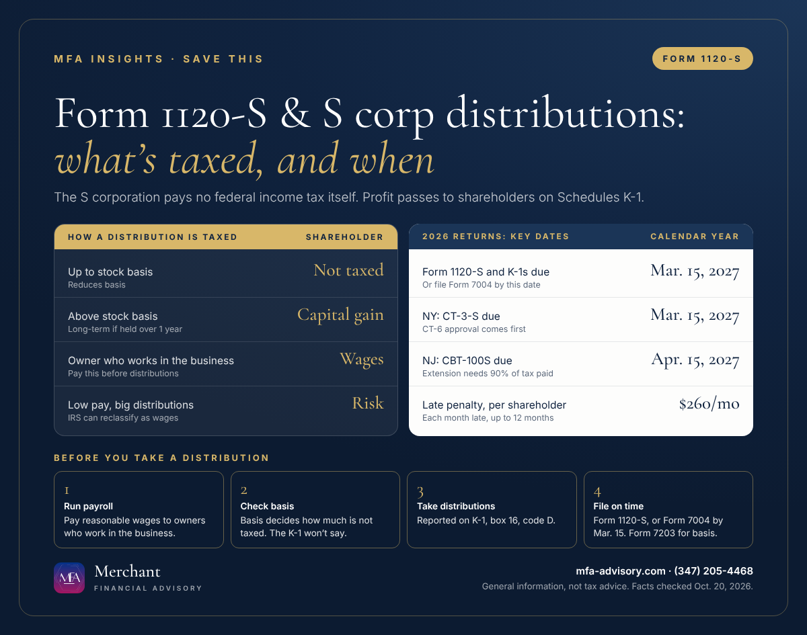

Executive summary
- Form 1120-S due date: March 15, 2027 for calendar-year 2026 returns, or September 15, 2027 with a Form 7004 extension filed by March 15. The extension does not extend the time to pay.
- Distributions: a non-dividend S corp distribution is not taxed up to the shareholder's stock basis. Anything above basis is taxed as capital gain.
- Pay yourself first: a shareholder who works in the business must be paid reasonable compensation (wages) before non-wage distributions. The IRS can reclassify distributions as wages.
- Late penalty: $260 per shareholder for each month or part of a month the return is late, up to 12 months, for returns due in 2027.
Bottom line: Put a reasonable salary on payroll, track each owner's basis before taking distributions, and file Form 1120-S or an extension by March 15 even if the business lost money.
Form 1120-S is the federal income tax return for an S corporation. The company generally pays no federal income tax itself. Its profit or loss passes through to the shareholders, each of whom gets a Schedule K-1 Form 1120-S showing their share, and the shareholders pay tax on their own returns. This guide covers who files, the 2027 deadlines, how S corp distributions are taxed and the New Jersey and New York returns.

Form 1120-S due date 2027: who files and when
A corporation files Form 1120-S if it elected S corporation status on Form 2553, the IRS accepted the election and it is still in effect. To qualify, the company must be a domestic corporation with no more than 100 shareholders, only allowable shareholders (individuals, certain trusts and estates), and only one class of stock.
- March 15, 2027: the due date for calendar-year 2026 returns (the 15th day of the 3rd month after year-end).
- September 15, 2027: the extended date, with Form 7004 filed by March 15. The extension is generally 6 months.
- E-filing: S corporations that file 10 or more returns of any type in a year must e-file Form 1120-S.
- New election: to be an S corporation for a year, file Form 2553 no more than 2 months and 15 days after that year begins, or at any time during the year before.
Form 1120-S late filing penalty
For returns required to be filed in 2027, the penalty is $260 per shareholder for each month or part of a month the return is late, up to 12 months (Rev. Proc. 2025-32). With two shareholders, three months late is $1,560, and a full year late is $6,240. (The 2025 Form 1120-S instructions show $255 for returns due in 2026; the amount is adjusted for inflation each year.)
How are S corp distributions taxed?
A distribution is money or property the corporation pays out to a shareholder as an owner. How it's taxed depends on S corp shareholder basis, also called stock basis, which is roughly what the owner has put in plus the income the S corporation has passed through, less what has been taken out.
| Situation | Tax result for the shareholder |
|---|---|
| Distribution is less than or equal to stock basis | Not taxed; reduces basis |
| Distribution is more than stock basis | The excess is capital gain (long-term if the stock was held longer than one year) |
For example, if an owner has $20,000 of stock basis and takes a $25,000 distribution, $20,000 is not taxed and $5,000 is capital gain. Debt basis isn't counted for this test.
Two practical points. First, the Schedule K-1 reports the distribution (box 16, code D) but does not state the taxable amount, so you have to track basis yourself. Second, stock basis is adjusted at year-end in this order: up for income, then down for distributions, then down for non-deductible expenses, then down for losses. Shareholders who receive a non-dividend distribution generally file Form 7203 with their return to show basis.
S corporation reasonable compensation: wages vs. distributions
S corporations must pay reasonable compensation to a shareholder-employee for services before non-wage distributions are made. The reason is payroll tax: wages are subject to employment taxes and non-wage distributions are not. The IRS can reclassify payments labeled as distributions as wages. Payments to the shareholder are wages to the extent receipts come from that shareholder's personal services.
Close the books and run owner wages through payroll all year, so the numbers are ready when the return is.
Key Form 1120-S schedules to get right
- Schedule K and one K-1 per shareholder. Line 16d of Schedule K reports distributions, and Schedule M-2 tracks the accumulated adjustments account.
- Schedules L and M-1 can be skipped if total receipts and total assets are both under $250,000 (Schedule B).
New Jersey and New York S corporation returns
- New Jersey (NJ CBT-100S): due the 15th day of the month after the federal due month, so April 15, 2027 for calendar 2026. The minimum tax runs from $375 to $1,500 based on New Jersey gross receipts. A six-month extension requires paying at least 90% of the tax, and there is no extension of time to pay.
- New York (CT-3-S): due March 15 for calendar-year filers. A federal S corporation must file Form CT-6 and get approval before filing the CT-3-S. The fixed dollar minimum tax runs from $25 to $4,500 based on New York receipts.
FAQs
March 15, 2027 for calendar-year 2026 returns. With Form 7004 filed by March 15, the deadline moves to September 15, 2027.
Not up to the shareholder's stock basis. A non-dividend distribution above basis is taxed as capital gain.
No, but only after reasonable compensation has been paid as wages. The IRS can reclassify distributions as wages when pay is too low.
$260 per shareholder for each month or part of a month the return is late, up to 12 months, for returns due in 2027.
Generally no. Income passes through to shareholders on Schedules K-1, and they report it on their own returns.
Merchant Financial Advisory (MFA), an accounting, tax and business solutions provider in Princeton, New Jersey, helps individuals and small and mid-sized businesses in New Jersey, New York and nationwide with S corporation returns, owner pay and year-end books. See our business tax services, our Form 1065 guide for LLCs and our 2027 tax calendar, or book a call below.
Save the key dates
- Mon, Mar 15, 2027Form 1120-S due for calendar-year 2026 S corporations File Form 1120-S or Form 7004 for an extension. Late penalty: $260 per shareholder per month, up to 12 months.
Add to calendar
- Mon, Mar 15, 2027Last day to file Form 2553 for S status starting January 1, 2027 A calendar-year corporation can also file Form 2553 at any time during 2026 for an election that takes effect January 1, 2027.
Add to calendar
- Mon, Mar 15, 2027NY: Form CT-3-S due (calendar year) Federal S corporations must have an approved Form CT-6 before filing Form CT-3-S.
Add to calendar
- Thu, Apr 15, 2027NJ: CBT-100S due (calendar-year 2026) Due the 15th day of the month after the federal due month. A six-month extension requires paying at least 90% of the tax and filing CBT-200-T.
Add to calendar
- Wed, Sep 15, 2027Extended Form 1120-S deadline (if Form 7004 was filed by March 15) The extension is for filing only. Form 7004 does not extend the time to pay any tax due.
Add to calendar
Subscribe to every MFA key date
"Add all these dates" downloads one file that opens in Apple Calendar, Outlook or Google Calendar (in Google, use Settings, then Import). Subscribing works with Apple, Google and Outlook and updates itself whenever we publish a new deadline.
Get key tax dates and new articles by email
Every new MFA Insights article, the IRS, New Jersey and New York deadlines that matter, and a calendar you can save. For individuals and small and mid-sized businesses.
Almost done: check your inbox and click the confirmation link to join MFA Insights. (If you don't see it in a minute, check Promotions or Spam.)
Have a question about this?
Ask us privately. Your question goes straight to our inbox, not onto the page, and we reply by email within one to three business days. Please don't include Social Security or account numbers.
Thanks, your question is in. We'll reply by email within one to three business days.
Sources
- IRS: Instructions for Form 1120-S (2025)
- IRS: Form 1120-S (2025), U.S. Income Tax Return for an S Corporation
- IRS: S corporations
- IRS: S corporation compensation and medical insurance issues
- IRS: S corporation stock and debt basis
- IRS: Instructions for Form 7004 (Rev. December 2025)
- IRS: Instructions for Form 7203
- IRS: Instructions for Form 2553
- IRS Rev. Proc. 2025-32: penalty amounts for returns required to be filed in 2027 (Section 6699)
- NJ Division of Taxation: 2025 CBT-100S instructions
- NY Department of Taxation and Finance: Instructions for Form CT-3-S
Facts checked against the sources above as of October 20, 2026. This article is general information, not tax, legal, or financial advice, and reading it does not create a client relationship. Tax rules change and every situation is different; confirm the details for your situation with a qualified professional before acting.